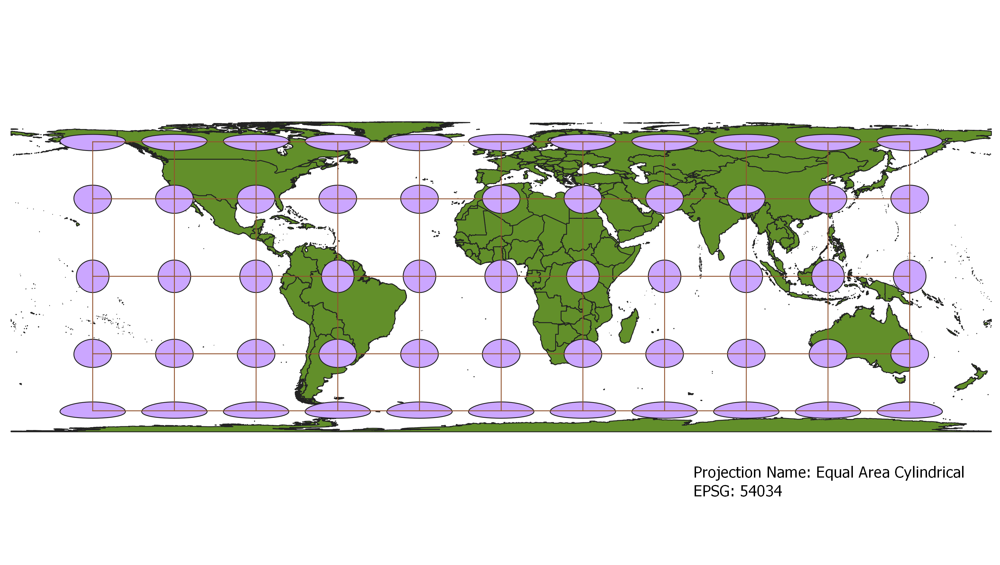
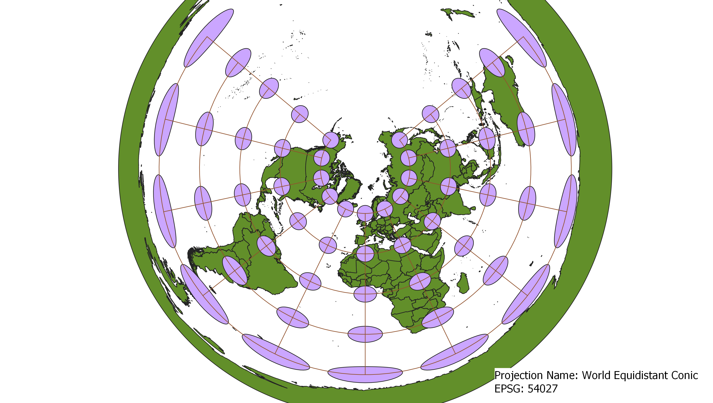
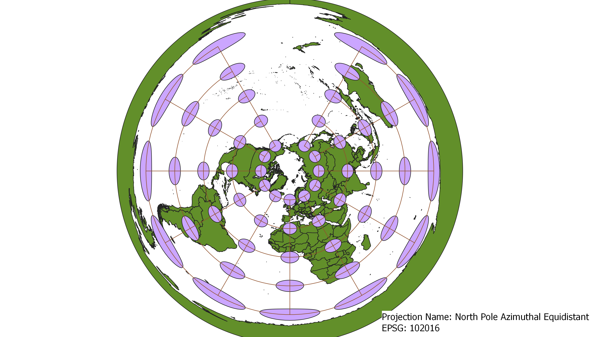
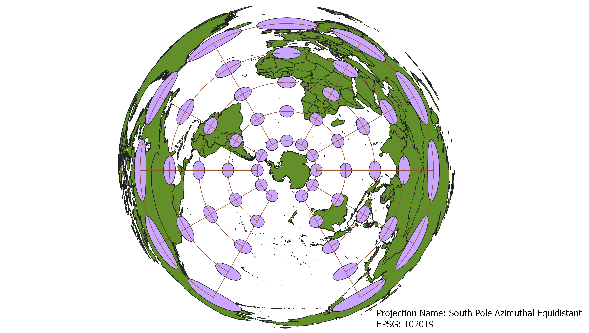
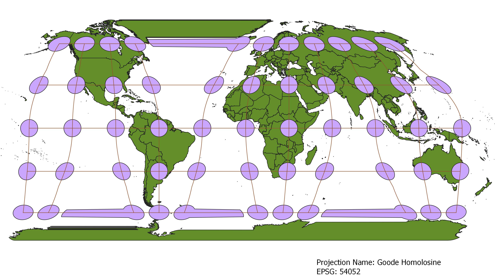

Ari Kauftheil
Starting off in QGIS, I uploaded the shapefile for the Natural Earth countries data to a blank project. I then added a layer of Tissot's indicatrices using the Indicatrix mapper plugin. Next, I searched for the different projections by their EPSG number under Project Properties->Project Coordinate Reference System. With the new project-wide CRS for each projection, I re-edited a single QGIS print layout and exported the finished maps as PNGs.
Neither shape, nor area is conserved, but the map is pretty accurate around the equator. The poles are most distorted with extra large areas and vertically squished shapes.
Neither shape, nor area is conserved, with distortion increasing out from the equator and prime meridian. The map emulates the curvature of the earth pretty well and it doesn't look too distorted visually.

Shape is conserved, while area is not. The equator is most accurate and continents are represented larger toward the poles.

Neither shape nor area is conserved. This map also tries mimic the curvature of the earth and distortion increases away from the prime meridian and equator.

Area is conserved, while shape is not. Shape is most accurate at the equator and continents become vertically squished toward the poles.
Neither shape nor area is conserved, but distance to points on the map from the North Pole looks to be conserved. The Arctic is really well represented, but area increaes towards the south and continents are stretched horizontally.
Mostly the same conservation and distortion properties as the equidistant conic projection. The arctic is represented a little differently, with the distance between Alaska and the east coast of Russia more accurately displayed (I think, at least they are closer). The oceans also seem more stretched longitudinally.
Neither shape nor area is conserved, but distance to points on the map from the South Pole are conserved. Antartica is most accurately represented, but it feels unusual to look at the world "upside down". It is a really interesting perspective shift. The continents increase in area and are stretched longitudinally towards the north.
Shape and area are very well (but not completely) conserved over the continents. The oceans are stretched and kind of split. Greenland has quite a large horizontal stretch, rather than being cut into two pieces. Antarctica too is greatly distorted.
Download Natural Earth 1:10m Cultural Vector
>I used the following website to find interesting projection types for the projections I got to choose myself:
The Future Mapping Company